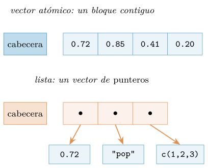
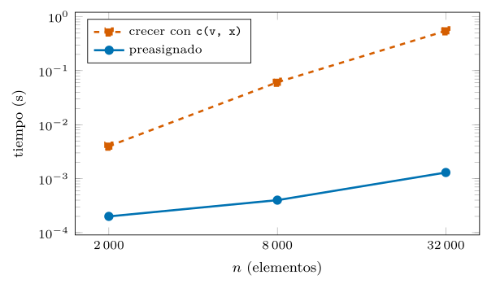
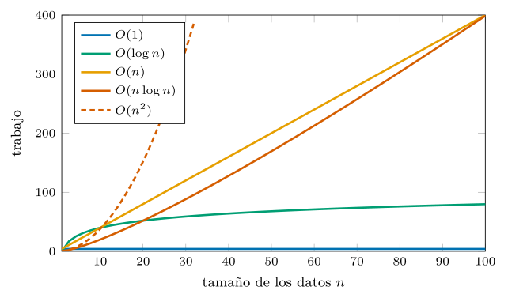
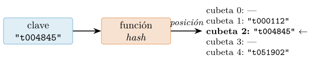
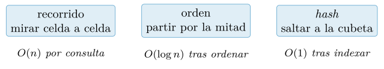
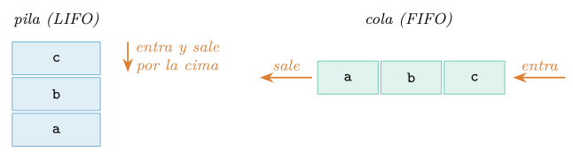
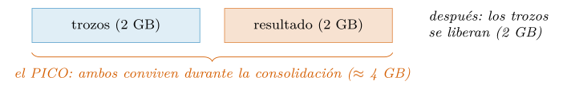

Capítulo 4. Estructuras de datos integradas y su coste
▶ Ejecutar este capítulo en Binder
La primera vez que se abre, Binder construye el entorno en la nube (unos 10-20 min); verás una pantalla de progreso. Después queda en caché y abre en segundos. Si parece que no responde, espera a que termine de construirse o vuelve a intentarlo.
Hay una pregunta que un análisis de datos formula miles de veces sin darse cuenta: «¿está este elemento?, ¿dónde?, ¿cuántos hay como él?». Y hay otra que casi nadie formula a tiempo: «¿cuánto cuesta preguntarlo así?». Este capítulo junta las dos. El capítulo 2 presentó las estructuras de R —el vector, la lista, el entorno— por su semántica; ahora toca abrirlas por su ingeniería: cómo se disponen en memoria, qué operaciones salen gratis y cuáles esconden un recorrido completo, y qué alternativas existen cuando la estructura cómoda se vuelve la estructura lenta. La recompensa es muy concreta: varias de las mediciones de este capítulo muestran diferencias de tres órdenes de magnitud entre dos maneras de escribir la misma idea, y saber verlas venir es la diferencia entre un guion que tarda un segundo y uno que tarda una hora.
El recorrido: el vector atómico por dentro (memoria contigua y sus consecuencias); el coste de crecer y por qué la lista lo suaviza; el idioma de la notación O grande para hablar de costes sin cronómetro; la pertenencia y sus tres motores (recorrido, orden, hash); lo más parecido que tiene R a un diccionario —y cuándo la lista con nombres deja de valer—; contar, agrupar y comprimir con las herramientas de serie; pilas, colas y datos ordenados; los registros para modelar entidades antes de que exista una tabla; y un integrador que indexa un catálogo de cincuenta mil pistas con todo lo anterior. Como siempre, cada cifra se ha medido ejecutando el código, y los tiempos se dan como cocientes, no como segundos absolutos (cap. 1).
El vector atómico por dentro
Toda estructura de R se construye sobre el vector atómico, así que su anatomía física es el punto de partida. Un vector vive en memoria como un bloque contiguo: una cabecera con los metadatos (tipo, longitud, atributos) seguida de las celdas de datos, una tras otra, todas del mismo tamaño. lobstr permite pesarlo con precisión:
library(lobstr)
obj_size(numeric(0)) # 48 B <- la cabecera: el precio de existir
obj_size(integer(1e6)) # 4.00 MB <- 4 bytes por entero
obj_size(numeric(1e6)) # 8.00 MB <- 8 bytes por doble
obj_size(logical(1e6)) # 4.00 MB <- el logico viaja como entero de 4 bytesLos números cuadran con lo prometido en el capítulo 2 y quedan de referencia en la tabla 4.1: enteros de 32 bits, dobles IEEE 754 de 64, y un dato quizá inesperado —el vector lógico gasta 4 bytes por celda, no 1, porque necesita sitio para su tercer valor, NA—.
| Tipo | Bytes/celda | Nota |
|---|---|---|
raw |
1 | sin NA; el mapa de bits (§4.1.1) |
logical |
4 | entero por dentro, por el NA |
integer |
4 | rango \(\pm 2{,}1 \times 10^9\) (cap. 2) |
double |
8 | el caballo de batalla |
character |
8 | puntero a la caché de cadenas |
| lista | 8 | puntero a un objeto completo aparte |
La contigüidad tiene dos consecuencias que gobiernan este capítulo. La buena: el acceso por posición es inmediato —para llegar a x[k] basta una multiplicación (inicio \(+ k \times\) tamaño de celda), da igual que el vector tenga diez celdas o diez millones—. La mala: no hay sitio para una celda más —el bloque termina donde termina, y «añadir un elemento» obliga a reservar un bloque nuevo más grande y copiar todo lo anterior—. De esa segunda consecuencia nace el anti-patrón más caro de R, y merece sección propia.

La lista, en cambio, es un vector cuyas celdas son punteros de 8 bytes a objetos completos e independientes (figura 4.1); de ahí que obj_size(vector("list", 1e6)) pese 8 MB antes de guardar nada. Esa indirección explica su flexibilidad (cada elemento, su tipo) y también su economía de copia, que enseguida mediremos: mover una lista es mover punteros. (Las secuencias regulares como 1:n ni siquiera pagan las celdas: viajan como receta ALTREP hasta que algo las materializa, cap. 2.)
El tipo que casi nadie usa: raw como mapa de bits
Entre los seis tipos atómicos del capítulo 2 había uno sin oficio aparente: raw, el byte pelado. Su hora llega cuando el dato es «sí/no para millones de posiciones» y los 4 bytes del lógico duelen. Un vector raw gasta 1 byte por celda —sin hueco para NA, esa es la renuncia— y sirve de mapa de presencia indexable:
S <- sample(1e7, 1e5) # cien mil ids, universo de 1e7
presente <- raw(1e7) # un byte por posicion posible
presente[S] <- as.raw(1)
obj_size(presente) # 10 MB <- el logical equivalente: 40 MB
as.logical(presente[c(S[1], 42)]) # TRUE FALSE <- consulta por POSICION, O(1)Es la estructura más espartana del capítulo: consulta inmediata, cuarta parte de memoria, y de regalo la lección general —cuando la clave es un entero acotado, la posición ya es el índice y no hace falta hash ninguno—. Volveremos a esa idea con los tres motores de la pertenencia (§4.4).
Predicados que saben parar
Un último rasgo del vector que se traduce en costes: algunas preguntas admiten respuesta temprana, y las funciones especializadas la aprovechan donde la composición genérica no puede. El caso modelo es «¿hay algún ausente?»:
any(is.na(x)) # construye el VECTOR ENTERO de is.na... y luego mira
anyNA(x) # mira celda a celda y PARA en el primer NA
# medido sobre 1e8 limpios: anyNA ~x7 mas rapido
# (y sin gastar 400 MB en la mascara)
# con un NA en la posicion 10: anyNA responde en tiempo CEROLa versión compuesta paga dos recorridos y una asignación gigante; la especializada, ninguno de los dos, y además cortocircuita (cap. 2). La familia es pequeña pero rinde: anyNA, anyDuplicated (§4.8.1) y el par is.unsorted/which.max. Regla nemotécnica: si existe la función con el nombre de tu pregunta, úsala —alguien ya pagó por ti el recorrido óptimo—.
Crecer cuesta: la medida del anti-patrón
El capítulo 2 enunció la regla —no hagas crecer un vector en un bucle— y estimó el castigo en un caso. Ahora toca el experimento sistemático, porque la forma en que crece el coste es la lección. Medimos construir un vector de \(n\) elementos añadiendo de uno en uno (v <- c(v, i)) frente a preasignar y rellenar, para tres tamaños en progresión \(\times 4\):
crecer <- function(n) { v <- c(); for (i in 1:n) v <- c(v, i); v }
prea <- function(n) { v <- numeric(n); for (i in 1:n) v[i] <- i; v }
# tiempos medidos (cocientes redondeados):
# crecer: n=2000 -> n=8000 ~ x15 mas lento; n=8000 -> n=32000 ~ x9
# prea: n=2000 -> n=32000 ~ el mismo tiempo (lineal, y minusculo)
# crecer(32000) tarda ~500 VECES mas que prea(32000)La firma delata la clase de coste: al multiplicar los datos por 4, el tiempo de crecer se multiplica por algo cercano a 16 —es decir, por \(4^2\)—. Es un crecimiento cuadrático: cada c(v, i) copia las \(i\) celdas ya existentes, y la suma \(1 + 2 + \cdots + n\) vale \(n(n+1)/2\), proporcional a \(n^2\). La versión preasignada escribe cada celda una sola vez: coste proporcional a \(n\), lineal, y quinientas veces más rápida ya con treinta mil elementos —con un millón, la diferencia se vuelve la de un parpadeo frente a una pausa para café—. La figura 4.2 dibuja las mediciones.

¿Y la lista? Aquí llega el matiz que casi nadie cuenta. Repetido el experimento con l[[length(l) + 1]] <- x frente a vector("list", n) preasignada, el castigo por crecer existe pero es mucho más suave —alrededor de \(\times 5\) en nuestro banco, no \(\times 500\)—:
crecer_l <- function(n) { l <- list()
for (i in 1:n) l[[length(l) + 1]] <- i; l }
prea_l <- function(n) { l <- vector("list", n)
for (i in 1:n) l[[i]] <- i; l }
# medido: crecer_l(32000) ~ x5 mas lento que prea_l(32000) (no x500)La razón está en la figura 4.1: al crecer una lista solo se copia el vector de punteros; los objetos apuntados ni se tocan. Sigue siendo cuadrático en teoría, pero con una constante tan pequeña que en tamaños medianos apenas duele. De ahí el idioma práctico para «no sé cuántos resultados habrá»: acumular en una lista (o mejor, producirlos con map, cap. 3, que preasigna por ti) y consolidar al final con list_rbind() o unlist(). Lo imperdonable no es crecer una lista corta; es crecer un vector atómico largo.
La copia a escala: cuándo un solo cambio cuesta medio segundo
El otro coste oculto de las estructuras de R es la copia al modificar (cap. 2), que en vectores de laboratorio parece gratis y a escala tiene precio de verdad. El experimento: un vector de cien millones de dobles (800 MB) y la modificación de una sola celda, en dos escenarios:
x <- numeric(1e8) # 800 MB
x[1] <- 1 # unica referencia: in situ, <1 ms
y <- x # segunda referencia viva
y[2] <- 2 # la MISMA operacion... dispara la copia de 800 MB
# medido: ~0.5 s <- miles de veces mas que la version in situLa línea es idéntica; el contexto no. Con una referencia, el intérprete modifica en el sitio; con dos, protege a x copiando los 800 MB antes de tocar nada. Las consecuencias de diseño: en los tramos calientes conviene que los objetos grandes tengan una dueña (no guardes alias «por si acaso» de la tabla gorda), y las modificaciones masivas se agrupan —cien mil asignaciones sueltas sobre un objeto compartido podrían pagar cien mil copias; una asignación vectorizada paga como mucho una—. tracemem() (cap. 2) sigue siendo el chivato para saber en cuál de los dos escenarios estás.
Hablar de costes: la notación O grande
Para razonar sobre costes sin cronómetro hace falta un idioma, y el estándar es la notación O grande (Cormen et al. 2022): describir cómo escala el trabajo cuando crece el tamaño \(n\) de los datos, ignorando constantes y términos menores. \(O(1)\) es el coste que no depende de \(n\) (acceder a x[k]); \(O(\log n)\), el que crece con el logaritmo (partir por la mitad repetidamente); \(O(n)\), el proporcional (recorrer entero); \(O(n \log n)\), el de ordenar bien; \(O(n^2)\), el que se multiplica por cien cuando los datos se multiplican por diez (el crecer de antes). La figura 4.3 da la imagen, la tabla 4.2 pone un ejemplo de R en cada clase, y conviene retener la moraleja: para \(n\) pequeño todas las curvas se parecen —cualquier código es rápido con cien datos—; las clases se separan brutalmente al crecer \(n\), que es justo cuando ya no se puede reescribir con calma.
| Clase | Se lee | Ejemplo en R |
|---|---|---|
| \(O(1)\) | constante | x[k]; get() en entorno |
| \(O(\log n)\) | logarítmico | una consulta de findInterval |
| \(O(n)\) | lineal | sum(x); table(x); %in% |
| \(O(n \log n)\) | casi lineal | sort(x); order() |
| \(O(n^2)\) | cuadrático | v <- c(v, x) en bucle; %in% en bucle |

Dos avisos de uso honesto. Primero: la O grande describe la clase, no el tiempo; dentro de una clase, las constantes mandan —dos algoritmos \(O(n)\) pueden diferir por cien veces si uno corre en C y otro interpreta, como se midió con apply frente a rowSums (cap. 3)—. Segundo: en datos, el coste que más veces arruina un guion no es un algoritmo exótico, sino el cuadrático accidental: una operación \(O(n)\) inocente —buscar, crecer, concatenar— colocada dentro de un bucle de \(n\) vueltas. Ya viste uno (crecer un vector); la sección siguiente mide el otro gran clásico.
Buscar: la pertenencia y sus tres motores
«¿Está este identificador en mi conjunto de referencia?» es la operación estrella del cruce de datos, y R la resuelve con tres motores de coste muy distinto: el recorrido (mirar celda a celda), el orden (búsqueda binaria sobre datos ordenados) y el hash (calcular a partir de la clave dónde mirar). Elegir motor es elegir cuántas veces puede uno permitirse preguntar.
El cuadrático accidental, medido
El experimento: un conjunto de referencia S con cien mil identificadores y diez mil consultas q. Dos códigos que responden lo mismo:
set.seed(2026)
S <- sample(1e7, 1e5) # 100 000 ids de referencia
q <- sample(S, 1e4) # 10 000 consultas
# version A: la pregunta DENTRO del bucle
resultado <- logical(length(q))
for (i in seq_along(q)) resultado[i] <- q[i] %in% S
# version B: la pregunta vectorizada, UNA vez
resultado <- q %in% S
# medido: A tarda ~1200 VECES mas que B (identico resultado)Mil doscientas veces. La versión A paga un recorrido de S por cada consulta —\(10^4 \times 10^5 = 10^9\) comparaciones—; la B deja que %in% monte una tabla hash interna con S y despache las diez mil consultas contra ella. Ese es el secreto a voces de match() y %in%: por dentro construyen un índice hash de la tabla de referencia, así que su coste es «montar el índice una vez (\(O(n)\)) + una consulta \(O(1)\) por elemento». Usados vectorizados son excelentes; usados elemento a elemento en un bucle, reconstruyen el índice en cada vuelta y ahí nace el desastre. La regla que lo evita siempre: las preguntas de pertenencia se hacen en lote.

match, %in%, unique y duplicated, y el explícito de los entornos y de hashtab.El mismo motor en su otro uso estrella: la tabla de traducción. match() no solo dice si está, dice dónde, y ese índice traduce códigos a etiquetas en una línea vectorizada:
codigos <- c("POP", "RCK", "JZZ", "CLA", "MTL")
etiquetas <- c("pop", "rock", "jazz", "classical", "metal")
observados <- c("RCK", "POP", "POP", "JZZ", "XXX", "MTL")
etiquetas[match(observados, codigos)]
# "rock" "pop" "pop" "jazz" NA "metal" <- y el codigo desconocido, NA visibleLa versión más compacta del mismo idioma usa un vector con nombres como mapa e indexa por nombre directamente —cómodo para tablas de traducción que se declaran a mano—:
mapa <- c(POP = "pop", RCK = "rock", JZZ = "jazz")
unname(mapa[c("RCK", "POP", "XXX", "JZZ")])
# "rock" "pop" NA "jazz" <- misma semantica; recuerda: lookup lineal(Con pocos códigos declarados y muchos datos que traducir, ambas formas van sobradas: la indexación por nombre se vectoriza sobre las consultas aunque cada búsqueda sea lineal en el mapa.) Y cuando la clave natural son dos campos —género y año, usuario y fecha—, se fabrica una clave compuesta pegándolos con un separador que no aparezca en los datos: paste(genero, anio, sep = "|") produce claves como "pop|2021" que funcionan en cualquiera de los motores. Es el truco artesanal detrás de todas las uniones por varias columnas que dplyr hará formales (cap. 8).
El motor del orden: findInterval
Si la referencia está ordenada, cada consulta puede resolverse partiendo el rango por la mitad una y otra vez: búsqueda binaria, \(O(\log n)\) por consulta —veinte comparaciones bastan para un millón de celdas—. En R la ejecuta findInterval(x, vec), que para cada valor de x devuelve la posición del último elemento de vec que no lo supera:
So <- sort(S)
pos <- findInterval(q, So) # 10 000 busquedas binarias: instantaneo
all(So[pos] == q) # TRUE <- todas encontradas en su sitio
findInterval(180, sort(duraciones)) # ademas responde "cuantos <= 180"La segunda lectura es la más útil en datos: sobre un vector ordenado, findInterval responde de un golpe «¿cuántos valores hay hasta este umbral?» —el fundamento de percentiles, histogramas y uniones por rango—. El orden es una estructura invisible: cuesta \(O(n \log n)\) construirla (ordenar) y a cambio abarata todas las preguntas posteriores; si vas a preguntar muchas veces contra los mismos datos, ordenarlos primero casi siempre amortiza.
El motor hash a mano: cuándo montar tu propio índice
%in% reconstruye su índice en cada llamada. Cuando el mismo conjunto de referencia va a recibir consultas en momentos distintos del programa —un índice de identificadores vivo durante todo el análisis—, compensa construir el hash una vez y conservarlo. Las dos herramientas de serie: el entorno con hash activado (cap. 2) y, desde R 4.2, la tabla hashtab del paquete utils:
idx <- new.env(hash = TRUE) # el diccionario clasico de R
for (s in as.character(S)) assign(s, TRUE, envir = idx)
exists(as.character(S[1]), envir = idx, inherits = FALSE) # TRUE, O(1)
h <- utils::hashtab() # R >= 4.2: hash sin disfraz
for (s in S) utils::sethash(h, s, TRUE) # admite claves no-caracter
utils::gethash(h, S[1]) # TRUEMedidas diez mil consultas: ambos índices responden en centésimas —el mismo orden que %in% vectorizado— pero sin pagar la reconstrucción en cada tanda. El entorno exige claves de texto (as.character); hashtab acepta claves arbitrarias y es más honesto con su oficio, a cambio de una interfaz más cruda: sethash/gethash/remhash para poner, leer y borrar, numhash para el recuento y maphash para recorrer las entradas —sin prometer orden alguno, fiel a la naturaleza del hash—:
h <- utils::hashtab()
utils::sethash(h, "pop", 3); utils::sethash(h, "rock", 2)
total <- 0
utils::maphash(h, function(k, v) total <<- total + v) # recorre TODO el indice
total # 5 <- agregado directo sobre el hash
utils::remhash(h, "pop"); utils::numhash(h) # 1: borrar y contarLa tabla 4.3 resume los tres motores.

| Motor | Preparar | Consultar | Cuándo |
|---|---|---|---|
recorrido (==, bucle) |
— | \(O(n)\) | solo consultas sueltas |
hash interno (%in%, match) |
\(O(n)\) por llamada | \(O(1)\) | consultas en lote |
orden (sort + findInterval) |
\(O(n \log n)\) una vez | \(O(\log n)\) | y responde rangos y conteos |
hash persistente (env, hashtab) |
\(O(n)\) una vez | \(O(1)\) | índice vivo toda la sesión |
Conjuntos: el vector único como estructura
El capítulo 2 presentó union, intersect y setdiff como vocabulario; aquí toca su contabilidad, que es excelente: las tres corren sobre el mismo motor hash de match (figura 4.4), así que son lineales en el total de elementos. Medido: la intersección de dos colecciones de un millón de identificadores cada una tardó una décima de segundo —cien mil comunes encontrados sin ordenar nada—. Para cruces de catálogos, listas de exclusión o cotejos de versiones, el conjunto es la estructura y estas tres funciones, toda la interfaz.
Dos matices de uso serio. Primero: las funciones de conjunto deduplican —tratan la entrada como conjunto matemático, repeticiones fuera—, y por eso setequal(c(1, 2, 2), c(2, 1)) es TRUE. Si las multiplicidades importan («¿cuántas copias de cada canción comparten dos listas?»), el conjunto se queda corto y el idioma es la aritmética de tablas de frecuencias:
x <- c("a", "a", "b", "c", "c", "c"); y <- c("a", "c", "c", "d")
tx <- table(x); ty <- table(y)
claves <- intersect(names(tx), names(ty))
pmin(tx[claves], ty[claves])
# a 1 | c 2 <- interseccion DE MULTICONJUNTOS: el minimo de cada cuentaSegundo: si la pregunta es solo de pertenencia masiva, no hace falta materializar la intersección: q %in% S devuelve la máscara sin construir el vector común (§4.4.1).
Del conjunto sale también la medida que decide varios diseños de este libro: la cardinalidad, el número de valores distintos (length(unique(x)), lineal con hash: un cuarto de segundo sobre diez millones de celdas). Cardinalidad baja pide factor e índice invertido; cardinalidad cercana a \(n\) delata un identificador (y pide las estructuras de clave de este capítulo); y una cardinalidad inesperada —«¿doce géneros? ¿no eran cinco?»— es de los mejores detectores baratos de datos sucios, como explotará la limpieza del capítulo 10.
El «diccionario» de R, con sus letras pequeñas
Muchos problemas piden un diccionario: pares clave–valor con consulta rápida por clave. R lo cubre con tres estructuras en escalera, y la letra pequeña está en el coste.
La primera es la lista (o vector) con nombres, ya conocida (cap. 2): lst[["clave"]] se lee de maravilla y para tablas pequeñas —configuraciones, traducciones de una docena de códigos— es la elección correcta. Su letra pequeña: el acceso por nombre recorre los nombres uno a uno. Es \(O(n)\), no \(O(1)\), y se nota en cuanto la «tabla» crece:
# lista de 10 000 pares; 2 000 consultas por clave, medidas:
# lst[[clave]] en bucle ~ x40 mas lento que get(clave, envir = entorno)
# la lista RECORRE sus nombres; el entorno SALTA con su hashLa segunda es el entorno (new.env(hash = TRUE)), el diccionario de verdad de R clásico: claves de texto, consulta \(O(1)\) con get/exists, inserción con assign —y semántica de referencia (cap. 2), que aquí es ventaja: el índice se pasa a funciones sin copiarse—. Sus dos operaciones de lote completan la interfaz: list2env() carga el diccionario de golpe desde una lista con nombres, y mget() consulta varias claves de una vez:
e <- list2env(list(a = 1, b = 2, c = 3), hash = TRUE) # carga masiva
unlist(mget(c("a", "c"), envir = e)) # a 1 | c 3, en loteLa tercera es hashtab (R \(\geq\) 4.2), que libera la restricción de claves de texto. El criterio de elección cabe en dos preguntas: ¿cuántas claves? (menos de mil: lista con nombres y a otra cosa); ¿las claves son texto? (sí: entorno; no: hashtab).
Acumulados: la estructura que responde rangos
Hay una familia de preguntas que parece condenada a recorrer: «¿cuánto suman los valores entre la posición \(i\) y la \(j\)?». Formulada una vez, se recorre y listo; formulada dos mil veces —una por ventana, por episodio, por consulta de un panel—, el recorrido repetido se convierte en el enésimo cuadrático accidental. La salida es otra estructura invisible: el vector de sumas acumuladas que construye cumsum(). Con él, cualquier suma de rango es una resta:
dur <- round(runif(1e6, 120, 420)) # un millon de duraciones
acum <- c(0, cumsum(dur)) # se construye UNA vez, O(n)
suma_rango <- function(i, j) acum[j + 1] - acum[i] # cada consulta: O(1)
suma_rango(1, 5) == sum(dur[1:5]) # TRUE
# 2000 sumas de un rango de ~500 000 celdas, medidas:
# sum(dur[i:j]) cada vez ~ x1300 mas lento que la resta de acumuladosMil trescientas veces, otra vez con la misma anatomía que la pertenencia: pagar una preparación lineal para que cada pregunta posterior cueste una constante. La familia completa —cumsum, cumprod, cummax, cummin— cubre acumulados de suma, producto y extremos (cummax responde «¿cuál era el récord hasta aquí?» sin bucle), y diff() es la inversa exacta: diff(c(0, cumsum(x))) devuelve x.
Ventanas deslizantes: embed
La prima de los acumulados es la ventana deslizante —«la media de las últimas tres observaciones», en cada posición—, y R base la resuelve con una función tan potente como mal conocida: embed(x, k) construye la matriz cuyas filas son las ventanas consecutivas de ancho k (con las columnas en orden temporal inverso, su única manía), lista para las operaciones por fila del capítulo 3:
x <- c(10, 12, 9, 14, 11)
embed(x, 3) # cada fila, una ventana de ancho 3
# [,1] [,2] [,3]
# [1,] 9 12 10 <- la ventana (10, 12, 9), invertida
# [2,] 14 9 12
# [3,] 11 14 9
rowMeans(embed(x, 3)) # 10.33 11.67 11.33 <- media movil, sin bucleSu coste es honesto: materializa \(k\) copias desplazadas del vector, perfecto para \(k\) pequeño y fatal para ventanas de miles. En ese extremo, la media móvil se hace por diferencia de acumulados ((acum[(k+1):n] - acum[1:(n-k)]) / k), y para el trabajo serio con ventanas —alineación, bordes, ventanas temporales irregulares— está slider (cap. 8). En el ecosistema de datos esta idea es ubicua: los percentiles sobre ordenados (§4.4.2), las medias móviles por diferencia de acumulados, y los índices de los formatos columnares del capítulo 9 son variaciones del mismo tema. Merece un nombre en tu caja de herramientas: precalcular lo acumulado convierte rangos en restas.
Contar, agrupar y comprimir
Tres preguntas de frecuencia aparecen en todo análisis, y R base las responde con especialistas compilados que conviene conocer antes de escribir un bucle.
¿Cuántos de cada? table() ya trabajó con los factores (cap. 2); su prima espartana tabulate() cuenta enteros \(1..n\) sin construir nombres —la opción rápida cuando los códigos ya son enteros—:
table(c("pop", "rock", "pop", "jazz", "pop", "rock"))
# jazz 1 | pop 3 | rock 2
tabulate(c(2, 3, 3, 5), nbins = 5) # 0 1 2 0 1 <- por posicion, sin nombresY una medición vacuna, por si la tentación del «diccionario acumulador» asoma: contar un millón de etiquetas con un entorno que incrementa clave a clave tardó cincuenta veces más que table(). Contar es una operación vectorizada con especialista compilado; el acumulador por clave queda para los flujos incrementales de verdad (datos que llegan por goteo y no admiten el lote). Y aun entonces, el idioma eficiente es híbrido: table sobre cada lote, y suma de conteos alineada por nombre —jamás por posición, que ya sabes cómo acaba (cap. 3)—:
acum <- c(pop = 0L, rock = 0L, jazz = 0L, classical = 0L, metal = 0L)
for (lote in lotes) { # los datos llegan por tandas
t <- table(lote$genero) # el especialista, por tanda
acum[names(t)] <- acum[names(t)] + t # y la suma, casada por nombre
}table() tiene además una dimensión más de la que aparenta —literal: con dos factores produce la tabla de contingencia, el recuento cruzado—, y as.data.frame() la vuelca al formato largo listo para analizar:
t2 <- table(genero = g, decada = decada)
# decada
# genero 2000 2010
# jazz 1 0
# pop 1 2
# rock 0 2
as.data.frame(t2) # genero | decada | Freq: el recuento, como tabla largaPor último, split tiene inversa exacta: unsplit() devuelve los trozos a sus posiciones originales. La pareja habilita el idioma «transforma por grupo sin desordenar»:
trozos <- split(energia, genero)
trozos <- lapply(trozos, \(v) v / max(v)) # normaliza DENTRO de cada genero
unsplit(trozos, genero) # cada valor, de vuelta a su fila¿Qué hay en cada grupo? split() reparte un vector (o una tabla) en una lista por niveles de un factor —la antesala del trocear-aplicar-combinar del capítulo 3—:
split(c(0.72, 0.85, 0.20, 0.41), c("pop", "rock", "pop", "jazz"))
# $jazz 0.41 $pop 0.72 0.20 $rock 0.85¿Qué rachas hay? rle() (run-length encoding) comprime un vector en pares (valor, longitud de racha), y es la respuesta de una línea a preguntas que parecen pedir un bucle con estado:
rle(c("a", "a", "b", "b", "b", "a"))
# lengths: 2 3 1 | values: "a" "b" "a"
conectado <- c(TRUE, TRUE, TRUE, FALSE, TRUE, TRUE)
r <- rle(conectado)
max(r$lengths[r$values]) # 3 <- la racha mas larga de TRUE, sin bucle«¿Cuál fue el máximo de días seguidos por encima del umbral?» es rle sobre la condición; «¿cuántos episodios distintos?» es sum(r$values). Su inversa inverse.rle() reconstruye el vector, lo que convierte a rle también en un compresor legítimo para señales con rachas largas.
El índice invertido: de la categoría a sus posiciones
Una variante de split tan útil que merece nombre propio: trocear las posiciones en vez de los valores. El resultado es un índice invertido —para cada categoría, dónde están sus elementos—, que convierte «dame todas las filas de este género» en una consulta directa:
gen <- c("pop", "rock", "pop", "jazz", "pop")
idx_gen <- split(seq_along(gen), gen) # posiciones agrupadas por categoria
idx_gen[["pop"]] # 1 3 5 <- las filas del pop, listas para indexar
energia[idx_gen[["pop"]]] # y cualquier columna se consulta con ellasSe construye una vez (\(O(n)\)) y sirve para todas las columnas y todas las consultas posteriores —el mismo contrato que el hash y el orden—. Es, literalmente, lo que un motor de búsqueda hace con los documentos y una base de datos con sus índices secundarios; el capítulo 9 lo reencontrará a escala industrial.
Dos utilidades de deduplicación completan la caja. anyDuplicated() responde «¿hay repetidos?» devolviendo la posición del primero (0 si no hay) —y corta en cuanto lo encuentra, más barato que sum(duplicated()) cuando solo se quiere la alarma—. Y duplicated(..., fromLast = TRUE) invierte el criterio de supervivencia: conservar la última aparición en vez de la primera, el matiz que importa cuando los duplicados son versiones y la buena es la más reciente.
Pilas, colas y el dato ordenado
R no trae tipos «pila» ni «cola» —su mundo es el vector—, pero los patrones se montan en diez líneas con las piezas de los capítulos 2 y 3, y montarlos una vez enseña más que cualquier biblioteca. La figura 4.6 fija la diferencia de disciplina.

Una pila (último en entrar, primero en salir: deshacer, recorridos en profundidad) es un vector preasignado más un índice de cima, encerrados en un entorno para que las operaciones muten estado sin copiar:
pila_nueva <- function(cap = 100) {
e <- new.env(parent = emptyenv())
e$datos <- vector("list", cap); e$cima <- 0L
e
}
pila_pon <- function(p, x) { p$cima <- p$cima + 1L; p$datos[[p$cima]] <- x }
pila_saca <- function(p) { x <- p$datos[[p$cima]]; p$cima <- p$cima - 1L; x }
p <- pila_nueva()
pila_pon(p, "a"); pila_pon(p, "b"); pila_pon(p, "c")
pila_saca(p) # "c" <- el ultimo en entrar
pila_saca(p) # "b"Cada operación es \(O(1)\): se escribe o se lee una celda y se mueve un índice —nada de c(v, x)—. La cola (primero en entrar, primero en salir: procesar por orden de llegada) es el mismo esquema con dos índices, frente y final:
cola_nueva <- function(cap = 100) {
e <- new.env(parent = emptyenv())
e$datos <- vector("list", cap); e$frente <- 1L; e$final <- 0L
e
}
cola_pon <- function(q, x) { q$final <- q$final + 1L; q$datos[[q$final]] <- x }
cola_saca <- function(q) { x <- q$datos[[q$frente]]
q$frente <- q$frente + 1L; x }
q <- cola_nueva()
cola_pon(q, "primero"); cola_pon(q, "segundo")
cola_saca(q) # "primero" <- FIFO: sale el que mas lleva esperandoLa cola es la estructura de los pendientes —ficheros por procesar, reintentos por hacer, nodos por visitar en un recorrido en anchura— y este esqueleto de veinte líneas cubre la mayoría de los usos reales. Su variante con urgencias es la cola de prioridad: sale primero el pendiente más importante, no el más antiguo. Para los tamaños de un guion de datos (cientos de pendientes), la versión sin pretensiones funciona de sobra —guardar prioridades y valores en paralelo y extraer con which.min—:
cp_saca_min <- function(p) {
i <- which.min(p$prio) # el mas urgente: O(n), y no pasa nada
x <- p$val[[i]]
p$prio <- p$prio[-i]; p$val[[i]] <- NULL
x
}
# pon(3, "baja"); pon(1, "URGENTE"); pon(2, "media")
# saca, saca, saca -> "URGENTE" "media" "baja"(La estructura clásica para esto —el montículo, con extracción \(O(\log n)\)— existe en paquetes especializados; con la lección de la constante bien aprendida, sabrás que solo compensa cuando los pendientes se cuentan por cientos de miles.)
Del patrón al tipo: esconder la estructura tras su interfaz
Fíjate en cómo quedaron pila, cola y cola de prioridad: un puñado de funciones —crear, poner, sacar— y ningún acceso directo a las tripas desde fuera. Ese envoltorio tiene nombre clásico, tipo abstracto de datos: el usuario conoce las operaciones y sus garantías; la estructura interior es asunto privado. El beneficio se cobra el día del cambio: si la cola de prioridad pasa de which.min a un montículo porque los pendientes se multiplicaron, ninguna línea de quien la usa se entera —mismas funciones, otra maquinaria—. Es la misma jugada que table o findInterval hacen contigo (¿sabes qué estructura usan por dentro? no te hace falta), y el preludio exacto de la programación con clases del capítulo 6, donde la pareja interfaz-pública/estado-privado se vuelve construcción del lenguaje. Para el patrón «ventana de los últimos \(k\)» —tan frecuente en series— ni siquiera hace falta estructura: tail(x, k) y la aritmética de índices resuelven, o slider (cap. 8) cuando las ventanas se vuelven protagonistas.
El tercer patrón es mantener los datos ordenados y explotarlo. Ya viste consultar con findInterval; sus complementos son la inserción en el sitio correcto (append(x, valor, after = findInterval(valor, x)), \(O(n)\) por el desplazamiento, pero sin reordenar) y el top-\(k\) sin ordenar todo: sort() con partial coloca correctamente solo las posiciones pedidas, en tiempo cercano a \(O(n)\):
x <- runif(1e6)
k <- 5
# umbral: el k-esimo mayor, via orden PARCIAL (no ordena el millon entero)
umbral <- sort(x, partial = length(x) - k + 1)[length(x) - k + 1]
top5 <- sort(x[x >= umbral], decreasing = TRUE)[1:k]
# medido: ~x5 mas rapido que sort completo ya con 1e6; mismo resultadoPara un millón de valores la ganancia es modesta (\(\times 5\) en nuestro banco); para cien millones, o dentro de un bucle, es la diferencia entre viable y no. La versión de una línea para casos sin apuros sigue siendo sort(x, decreasing = TRUE)[1:k] —claridad primero, optimización cuando se mida que hace falta—.
Un apunte final sobre ordenar de verdad: la herramienta de trabajo no suele ser sort sino order (cap. 2), porque su permutación ordena la tabla entera y admite varias claves con sentidos distintos —el signo menos invierte una clave numérica—:
o <- order(df$genero, -df$energia) # por genero A-Z y, dentro, energia DESC
head(df[o, c("genero", "energia")], 3)
# genero energia
# jazz 0.99999... <- el jazz mas energico encabeza su grupoR elige por dentro el algoritmo según el tipo (el radix para enteros y factores es de los más rápidos que existen), y de ahí la recomendación de §4.16: dale claves numéricas o factores siempre que puedas.
Índices como estructura: muestras, barajados y particiones
Una idea silenciosa recorre el capítulo y merece hacerse explícita: un vector de índices es una estructura de pleno derecho. La permutación de order ordena la tabla entera; las posiciones de split forman el índice invertido; y las operaciones «aleatorias» del análisis —muestrear, barajar, partir— son, bien miradas, pura aritmética de índices con sample() como fábrica:
set.seed(2026) # el azar, sembrado (cap. 1)
n <- nrow(pistas)
idx_train <- sample(n, round(0.7 * n)) # 70%, sin reemplazo
idx_test <- setdiff(seq_len(n), idx_train) # el complementario EXACTO
pistas[idx_train, ]; pistas[idx_test, ] # dos vistas disjuntas
barajada <- pistas[sample(n), ] # sample(n): una PERMUTACIONEl detalle de diseño está en setdiff: define el conjunto de prueba como complemento del de entrenamiento, y las propiedades críticas —disjuntos, exhaustivos— quedan garantizadas por construcción, no por esperanza (compruébalo: intersect vacío, setequal con 1:n cierto). Trabajar con índices en vez de con copias tiene además premio de memoria: los dos «conjuntos» pesan lo que dos vectores de enteros, y la tabla sigue siendo una sola hasta que de verdad haga falta materializar. El capítulo 13 montará sobre este patrón sus particiones y su validación cruzada; aquí queda el fundamento: el subconjunto es un vector de posiciones.
Completan la aritmética de índices dos casos límite del capítulo 2 que aquí cobran oficio. Los índices negativos expresan la exclusión —x[-idx_atipicos] es «todo menos estos», el complemento sin setdiff cuando ya se tienen las posiciones— y el índice cero produce la selección vacía con el tipo correcto (x[0] es numeric(0), no un error), el caso borde que el código robusto atraviesa sin inmutarse (cap. 2).
sample() guarda un argumento más que conviene conocer desde ya: prob, que muestrea con pesos. Sembrado y comprobado:
set.seed(2026)
g <- sample(c("exito", "fallo"), 1e5, replace = TRUE, prob = c(0.9, 0.1))
prop.table(table(g)) # exito 0.898 | fallo 0.102 <- las frecuencias obedecenEs la puerta de las simulaciones con clases desbalanceadas y de los sorteos estratificados (cap. 11); de momento basta el reflejo de verificación que acabas de ver —prop.table(table()) sobre lo muestreado— para no fiarse ni del propio azar.
Máscara o índices: la misma selección, dos monedas
Una selección puede viajar como máscara lógica (un TRUE o FALSE por celda) o como vector de índices (which(mask)). Son intercambiables en significado y muy distintas en coste cuando los aciertos son escasos. Con diez mil aciertos entre diez millones:
mask <- x > 0.999 # 40 MB: paga las DIEZ MILLONES de celdas, siempre
idx <- which(mask) # 40 kB: paga solo los DIEZ MIL aciertos
x[idx] # extraer por indices: ~x100 mas rapido (medido)La máscara es imbatible para componer condiciones (&, |, cap. 2) y se paga una vez; pero si la selección —dispersa— va a reutilizarse, convertirla a índices con which() la comprime mil veces y acelera cada uso posterior. Regla de bolsillo: componer en lógica, persistir en índices.
El tiempo como estructura
Las fechas del capítulo 2 —dobles con clase— heredan sin esfuerzo toda la maquinaria de este capítulo, porque por dentro son números: se ordenan al coste del radix, funcionan como claves, y sobre una serie de fechas ordenada findInterval responde preguntas de calendario con búsqueda binaria:
set.seed(2026)
fechas_de_escucha <- as.Date("2026-01-01") +
sample(0:119, 500, replace = TRUE) # 500 escuchas (ene-abr)
fechas <- sort(fechas_de_escucha) # la estructura: orden
findInterval(as.Date("2026-03-01"), fechas) # ¿cuantas hasta marzo?
seq(as.Date("2026-01-01"), by = "month", length.out = 4) # rejilla mensual
# "2026-01-01" "2026-02-01" "2026-03-01" "2026-04-01"La rejilla de seq() es la tercera pieza: unas fronteras regulares contra las que clasificar con findInterval o cut (cap. 2) dan el histograma temporal sin grupos explícitos. Completo y verificado, el idioma entero son tres líneas:
rejilla <- seq(as.Date("2026-01-01"), by = "month", length.out = 5)
mes <- findInterval(fechas, rejilla) # a que casilla cae cada escucha
tabulate(mes, nbins = 4) # 130 123 122 125 <- escuchas por mes
# (coincide exactamente con table(format(fechas, "%m")): dos caminos, un conteo)El trabajo fino con tiempo (zonas, huecos, ventanas móviles temporales) llega en el capítulo 8; la lección estructural queda aquí: una serie temporal ordenada es un vector ordenado, con todos sus privilegios.
Registros: modelar la entidad antes que la tabla
Entre el valor suelto y la tabla hay una escala intermedia que merece diseño propio: el registro, una entidad con campos heterogéneos y nombres fijos —esta pista, con su identificador, su título, su género y su energía—. El idioma de R para el registro es la lista con nombres construida por una función constructora que valida (cap. 3):
pista <- function(id, titulo, genero, energia) {
stopifnot(is.character(id), is.character(titulo),
is.character(genero), is.numeric(energia),
energia >= 0, energia <= 1)
list(id = id, titulo = titulo, genero = genero, energia = energia)
}
p <- pista("t001", "Clocks", "pop", 0.72)
p$energia # 0.72
pista("t003", "X", "pop", 1.7) # Error: energia <= 1 is not TRUEEl constructor concentra las garantías: ningún registro mal formado entra al sistema, y todo el código posterior puede asumir los campos sin comprobarlos. Para actualizar un registro sin recitar los campos que no cambian está modifyList(), que funde el original con los cambios (y añade campos nuevos si llegan):
p2 <- modifyList(p, list(energia = 0.80, escuchas = 15L))
p2$energia # 0.8 <- actualizado; el resto de campos, intactosUna colección de registros es una lista de listas, y su destino natural, cuando crece, es consolidarse en tabla:
registros <- list(pista("t001", "Clocks", "pop", 0.72),
pista("t002", "Paranoid", "rock", 0.85))
list_rbind(map(registros, as.data.frame))
# id titulo genero energia
# t001 Clocks pop 0.72
# t002 Paranoid rock 0.85¿Cuándo registro y cuándo tabla? La tabla gana en cuanto hay muchas entidades homogéneas que analizar en conjunto —es columna a columna, compacta y vectorizable—. El registro gana mientras la entidad se construye y valida una a una: al leer de una API (cap. 5), al acumular resultados heterogéneos, al pasar «una cosa» entre funciones con su contrato. El flujo maduro suele ser registros en la frontera, tabla en el análisis. Y cuando el registro pide formalidad —tipos declarados, validación automática, métodos—, el sistema de clases S7 lo eleva a clase con validador (cap. 6); el constructor artesanal de arriba es su boceto.
Estructuras anidadas: la lista como árbol
Cuando los registros contienen registros —el álbum con sus pistas, la respuesta de una API con sus páginas— la lista se vuelve árbol, y conviene un kit mínimo para moverse por él sin perderse. Para el diagnóstico, purrr::pluck_depth() mide cuántos niveles hay y str(x, max.level = 2) dibuja el mapa (cap. 2); para el acceso puntual, pluck() baja por el camino indicado sin dramas (cap. 3). Y para deshacer el árbol hay tres herramientas de agresividad creciente:
anidada <- list(1, list(2, 3, list(4, 5)), 6)
pluck_depth(anidada) # 4 niveles
list_flatten(anidada) # quita UN nivel (controlado, sigue siendo lista)
unlist(anidada) # 1 2 3 4 5 6 <- aplana TODO a vector atomico
rapply(anidada, \(x) x * 10, how = "unlist") # transforma las HOJAS y aplanaunlist() es la más expeditiva y la más peligrosa: al producir un vector atómico aplica la coerción del capítulo 2 —un solo texto en una hoja y todo el árbol acaba en cadenas—, así que se reserva para árboles homogéneos. list_flatten() pela un nivel por llamada y conserva la lista, que casi siempre es lo que el siguiente map necesita. Y rapply() (o cuenta_hojas y sus primas recursivas del cap. 3) recorre las hojas respetando la forma. El coste de las tres es lineal en el número total de hojas; la elección es de semántica. El trabajo serio con árboles de datos —el JSON real, con sus campos opcionales y sus listas de listas— llega en el capítulo 5; este kit es su gimnasio.
Y una advertencia sobre el viaje en sentido contrario, del vector a la lista, porque su precio escandaliza la primera vez:
v <- c(1:1e6) # un millon de enteros materializados: 4 MB
lv <- as.list(v) # el MISMO contenido, como lista: 64 MB (x16)En la lista, cada número deja de ser una celda de 4 bytes y pasa a ser un objeto completo —con su cabecera de 48 bytes y su puntero—: el empaquetado multiplica la memoria por dieciséis y expulsa el dato de todas las rutas vectorizadas (sumar esa lista con Reduce tardó cien veces más que sum sobre el vector, y de regalo tropezó con el desbordamiento de enteros del cap. 2). La lista es para lo heterogéneo y lo anidado; en cuanto los datos son homogéneos, el vector atómico es su casa, y las conversiones masivas vector\(\leftrightarrow\)lista deben mirar dos veces su motivo.
Huellas: comparar estructuras sin recorrerlas dos veces
¿Son iguales estas dos tablas? identical() responde con rigor bit a bit y coste lineal —recorre ambas—, y all.equal() añade la tolerancia numérica para dobles (cap. 2). Para comparaciones repetidas existe un truco de estructura: la huella (hash) del objeto completo, un resumen corto y determinista que se calcula una vez y se compara en tiempo constante:
d1 <- data.frame(a = 1:3, b = c("x", "y", "z"))
d2 <- data.frame(a = 1:3, b = c("x", "y", "z"))
rlang::hash(d1) # "7254983c9a90..." <- la huella del objeto
rlang::hash(d1) == rlang::hash(d2) # TRUE: mismos datos, misma huellaLa huella es la generalización a objetos del md5sum de ficheros del capítulo 1, y trabaja por todas partes sin que se la vea: memoise (cap. 3) identifica con ella los argumentos ya vistos, targets (cap. 1) decide con huellas qué pasos rehacer, y un caché artesanal —«¿ya procesé esta tabla exacta?»— son dos estructuras de este capítulo trabajando juntas:
cache <- new.env(hash = TRUE) # huella -> resultado
con_cache <- function(d) {
clave <- rlang::hash(d)
if (!exists(clave, envir = cache, inherits = FALSE))
assign(clave, procesa_cara(d), envir = cache)
get(clave, envir = cache, inherits = FALSE)
}
con_cache(df) # primera vez: calcula (0.3 s medidos)
con_cache(df) # la misma tabla EXACTA: responde de la cache (0.01 s)Su letra pequeña: dos huellas distintas garantizan objetos distintos, pero la igualdad de huellas es prácticamente segura, no matemáticamente cierta (colisiones astronómicamente improbables), y la huella de dobles es sensible al último bit —para «iguales salvo redondeo», sigue haciendo falta all.equal—.
La tabla por dentro: los costes del data frame
La estructura que dominará el resto del libro merece pasar por el mismo banco de pruebas. Un data frame es una lista de columnas (cap. 2), y de esa anatomía salen sus costes: todo lo que respete las columnas es barato; todo lo que atraviese filas, caro.
Columna barata, fila cara
Acceder a una columna es seguir un puntero (§4.1): inmediato, del tamaño que sea la tabla. «Una fila», en cambio, no existe como bloque de memoria: extraerla obliga a visitar cada columna, recortar una celda de cada una y coser un data frame nuevo de una fila, con toda su burocracia. El castigo aparece, como siempre, al repetir:
# 2000 celdas de la columna energia, dos maneras:
for (i in 1:2000) s <- s + df[i, "energia"] # fila a fila
sum(df$energia[1:2000]) # la columna, de un tajo
# medido: la version fila a fila tarda ~150 VECES masLa regla de diseño que se deriva es la del libro entero: sobre una tabla se piensa en columnas. Los bucles «por fila» casi siempre esconden una operación vectorizada sobre columnas (o un map sobre la lista de columnas, cap. 3); las herramientas de dplyr (cap. 8) institucionalizan exactamente esa disciplina.
La tabla que crece y la que se ensancha
Acumular resultados con rbind en un bucle es el c(v, x) de las tablas: cada vuelta copia todo lo acumulado. El idioma correcto ya lo tienes —acumular los trozos en una lista y consolidar una sola vez—:
acc <- df[0, ] # anti-patron: tabla que crece
for (k in 1:300) acc <- rbind(acc, trozo)
# frente a:
l <- vector("list", 300) # lista de trozos...
for (k in 1:300) l[[k]] <- trozo
acc <- do.call(rbind, l) # ...un unico rbind final
# medido: x5 ya con 300 trozos, y la brecha crece con la cuenta
# (con purrr: list_rbind(map(...)), que ademas preasigna el bucle)Ensancharse, en cambio, es barato: añadir una columna (df$nueva <- ...) copia el vector de punteros de la lista y crea la columna nueva —milisegundos aunque la tabla tenga cien mil filas—. La asimetría completa el retrato: la tabla de R está optimizada para vivir a lo ancho (columnas que entran y salen) y sufrir a lo largo (filas de una en una).
Pasar la tabla no cuesta; tocarla, depende
¿Cuánto cuesta darle la tabla gorda a una función? Nada, hasta que la función la modifica —son las promesas y la copia al modificar de los capítulos 2 y 3, ahora con tracemem de testigo—:
f_lee <- function(d) nrow(d) # solo consulta
f_toca <- function(d) { d$energia[1] <- 0; nrow(d) }
tracemem(df)
f_lee(df) # (silencio: NINGUNA copia)
f_toca(df) # dos avisos: armazon + columna tocadaY ni siquiera la copia de f_toca es el drama que parece: como la copia es por columnas (cap. 2), solo el armazón de punteros y la columna modificada se duplican; las demás siguen compartidas. Moraleja para diseñar tuberías: leer es gratis, escribir se paga por columna, y las funciones que solo consultan pueden recibir la tabla entera sin remordimientos.
Ya que hablamos de tuberías, un mito que conviene enterrar con datos: «cada |> añade una copia». Medido con bench sobre diez millones de valores, la cadena x |> sqrt() |> log1p() |> round(3) y la forma anidada round(log1p(sqrt(x)), 3) asignaron exactamente la misma memoria (153 MB: los tres resultados intermedios, que existen igual en ambas) y tardaron lo mismo. La tubería es sintaxis pura —el intérprete la reescribe como la llamada anidada—; se elige por legibilidad (cap. 2) sin pagar peaje alguno. Los intermedios, esos sí, son reales en las dos formas: si la cadena es larga y los datos enormes, la servilleta de §4.22 debe contarlos.
La columna-lista: registros dentro de la tabla
Como las columnas de una tabla son elementos de una lista, nada impide que una columna sea ella misma una lista —una columna-lista—, y con ella la tabla aloja datos de longitud variable por fila: las etiquetas de cada pista, los intentos de cada descarga, el resultado completo de un modelo por grupo. En el data frame clásico se declara protegiéndola con I() («tal cual, sin desmontar»):
df <- data.frame(id = c("t1", "t2"))
df$etiquetas <- I(list(c("rock", "live"), "acustica"))
df$etiquetas[[1]] # "rock" "live" <- la fila t1 tiene DOS etiquetasLa columna-lista casa la flexibilidad del árbol (§4.13) con la disciplina de la tabla, y es una idea con mucho futuro en este libro: los tibbles la tratan como ciudadana de primera y el idioma map + columna-lista vertebra el modelado por grupos (caps. 8 y 14). Su coste es el de la lista que contiene: punteros, objetos aparte, y las operaciones vectorizadas de las columnas atómicas no le aplican —se recorre con map, a sabiendas—.
El coste del texto
Las claves de casi todo lo anterior eran cadenas, y el texto tiene su propia contabilidad. La buena noticia ya la dio el capítulo 2: la caché global de cadenas hace que repetir un valor cueste un puntero, no una copia. Las letras pequeñas son tres, todas medidas.
Buscar literal no es buscar patrón. grepl(patron, x) interpreta el patrón como expresión regular; cuando lo que se busca es un texto literal, el argumento fixed = TRUE esquiva el motor de expresiones y, sobre un millón de cadenas, salió seis veces más rápido con resultado idéntico. Gratis, con solo declarar la intención:
grepl("rock", textos) # regex: potencia que aqui no se usa
grepl("rock", textos, fixed = TRUE) # literal: x6 medido, mismo resultado
startsWith(textos, "cap") # prefijos: x4.6 vs grepl("^cap")Ordenar texto es carísimo. La comparación de cadenas pasa por las reglas del locale (cap. 2), y se nota: ordenar un millón de cadenas tardó quince veces más que ordenar diez millones de enteros —dos órdenes de magnitud por elemento—. Cuando una columna de códigos se va a ordenar o agrupar sin parar, conviene que viva como entero o factor, no como texto libre.
¿Y el factor ahorra memoria? Menos de lo que promete su fama: un millón de etiquetas de cinco valores pesó 8 MB como carácter y 4 MB como factor —\(\times 2\), no \(\times 20\), porque la caché de cadenas ya había hecho la mitad del trabajo—. El factor se elige hoy por semántica (niveles declarados, contrastes, orden; cap. 2) y por ese orden barato; como compresor, es solo discreto.
Las claves de texto se ordenan como texto. Si un identificador generado va a ordenarse alguna vez, el número interior necesita relleno a ancho fijo, porque el orden lexicográfico no sabe de aritmética:
sort(paste0("t", c(2, 10, 1))) # "t1" "t10" "t2" <- ay
sort(sprintf("t%03d", c(2, 10, 1))) # "t001" "t002" "t010" <- correctoEs la razón del sprintf("t%06d", ...) que usa el integrador, y un clásico de los ficheros por lotes (lote-9.csv ordenado detrás de lote-10.csv ha descolocado más de una carga).
Safari de estructuras: leer las de los demás
Con lo aprendido, un secreto a voces se vuelve visible: casi todas las «estructuras nuevas» que R te entregará durante el resto del libro son listas con clase. El resultado de un modelo, de un test, de un histograma: listas con nombres, vestidas con un atributo class (cap. 2) que les da su comportamiento. Compruébalo con las herramientas de siempre:
m <- lm(y ~ x) # un modelo lineal (cap. 11)
class(m); typeof(m) # "lm" "list" <- una LISTA de 12 campos
names(m)[1:5]
# "coefficients" "residuals" "effects" "rank" "fitted.values"
m$coefficients # y cada campo se saca como en CUALQUIER lista
class(rle(v)); typeof(rle(v)) # "rle" "list"
class(hist(x, plot = FALSE)) # "histogram" (una lista con las barras)
class(table(g)); typeof(table(g)) # "table" "integer": un VECTOR con dimLa consecuencia práctica es liberadora: ante cualquier objeto desconocido que te devuelva un paquete, el protocolo del capítulo 2 —str(), class(), names()— lo abre en canal, y las técnicas de este capítulo (extraer, mapear, consolidar) le aplican enteras. No hay magia en los objetos de R: hay listas, vectores y atributos, es decir, todo lo que ya sabes pesar y recorrer. Por qué la clase les da su conducta —el despacho de métodos— es exactamente el tema del capítulo 6.
La frontera de las integradas
Las estructuras de este capítulo cubren un rango enorme, y conviene saber dónde acaba. Tres señales de frontera. El tamaño: cuando la tabla deja de caber con holgura en memoria, el relevo son los formatos y motores en disco —arrow, DuckDB— del capítulo 9, que traen sus propias estructuras columnares. La dispersión: una matriz gigante casi toda de ceros (una red de coocurrencias, una matriz documento-término) no se guarda densa; el paquete Matrix la representa dispersa, almacenando solo lo no nulo, y la diferencia se pesa:
library(Matrix)
# 1000 celdas no nulas
sp <- sparseMatrix(i, j, x = pesos, dims = c(1000, 1000))
den <- as.matrix(sp)
obj_size(sp) # 17.5 kB <- solo lo no nulo (y sus coordenadas)
obj_size(den) # 8.00 MB <- el millon de celdas, casi todas cero: x460La mutación intensiva: si el patrón dominante es modificar millones de filas in situ, la copia al modificar cobra peaje (§4.2.1) y data.table (vía dtplyr, cap. 9) es la excepción consciente a la semántica de copia. Mientras ninguna señal aparezca, las integradas —bien elegidas— llegan mucho más lejos de lo que se les supone; el integrador que sigue maneja cincuenta mil pistas sin despeinarse.
Un rediseño de principio a fin
Las reglas del capítulo, aplicadas juntas a un caso que llega tal cual de la vida real: filtrar, de veinte mil identificadores consultados, los que pertenecen a una referencia de cien mil. La primera versión es la que escribe todo el mundo la primera vez —y comete dos pecados a la vez—:
ingenuo <- function() {
hallados <- c()
for (i in seq_along(q)) {
if (q[i] %in% S) hallados <- c(hallados, q[i]) # %in% en bucle + crecer
}
hallados
}
con_reglas <- function() q[q %in% S] # pertenencia en lote + mascara
# medido: 5.6 s frente a 0.002 s -> ~x2800, con resultado IDENTICOUna sola línea, dos mil ochocientas veces más rápida, y ni siquiera hizo falta una estructura nueva: bastó formular en lote lo que estaba formulado en elemento. Vale como resumen ejecutivo del capítulo —los desastres de coste rara vez piden ingeniería; piden reconocer el patrón— y como plantilla del método: detectar el bucle sospechoso, nombrar sus pecados contra la tabla 4.6, reescribir en lote y verificar la identidad del resultado antes de celebrar el cociente.
Cuando n es pequeño, gana la elegancia
Después de tanto cociente conviene el contrapeso, porque el capítulo también puede leerse mal. Todas las catástrofes medidas aquí necesitaron decenas de miles de elementos para doler; con los tamaños de la mayoría de los pasos de un análisis —cientos de filas, docenas de grupos— cualquier estructura y cualquier forma de escribirlo responden en milisegundos. En ese régimen, optimizar es un vicio con disfraz de virtud: el índice hash para ocho claves, el orden parcial para un top-3 de veinte valores o el tampón preasignado para diez resultados solo añaden líneas que mantener y errores que cometer. La jerarquía sana no cambia nunca: correcto, luego claro, luego —si un cociente medido lo exige— rápido. Este capítulo te ha dado el radar para el tercer paso; los dos primeros siguen mandando. La señal para activar el radar es objetiva, no estética: un system.time que molesta, un mem_used que asusta, o una servilleta (§4.22) que anuncia problemas antes de empezar.
Medir con rigor: bench
Las mediciones del capítulo usaron system.time() y cocientes, que bastan para diferencias de órdenes de magnitud. Cuando la diferencia es fina —¿esta variante es un 30 % mejor o es ruido?— el instrumento serio es bench::mark(): repite cada expresión muchas veces, descarta el ruido, comprueba que los resultados coinciden y, sobre todo, informa de la memoria asignada, que es donde las estructuras se delatan:
library(bench)
x <- runif(1e5)
mark(
bucle = { s <- 0; for (v in x) s <- s + v; s },
vectorizado = sum(x),
check = FALSE)
# expression min median itr/sec mem_alloc gc/sec
# 1 bucle 2.15ms 2.25ms 442. 39.8KB 28.7
# 2 vectorizado 151us 151us 6551. 0B 0Dos columnas cuentan la historia completa. median: el bucle tarda quince veces más. mem_alloc: el bucle asigna memoria en cada vuelta (y despierta al recolector 29 veces por segundo), mientras que sum corre con cero asignaciones —opera sobre el bloque contiguo y no fabrica nada—. Muchas «lentitudes misteriosas» de R son en realidad asignación compulsiva, y mem_alloc las hace visibles. El protocolo de uso honesto: medir sobre datos del tamaño real, comparar variantes que devuelvan lo mismo (check = TRUE lo verifica), y recordar la jerarquía del capítulo 1 —primero que sea correcto, luego que sea claro, y solo entonces, si un cociente medido lo pide, que sea rápido—.
Estimar antes de ejecutar: cuentas de servilleta
El complemento de medir es prever, y para eso bastan dos números gordos. Memoria: celdas \(\times\) bytes por celda (tabla de §4.1) —cien millones de dobles son 800 MB; si tu máquina tiene 16 GB, una copia inesperada (§4.2.1) aún cabe, pero cinco no—. Tiempo: R vectorizado procesa del orden de \(10^8\)–\(10^9\) celdas por segundo en operaciones simples; el código interpretado celda a celda, dos o tres órdenes menos. Con eso, tres preguntas antes de lanzar nada grande: ¿cuántas celdas tendrá el resultado y sus intermedios?, ¿cuántas veces tocaré cada una?, ¿alguna operación esconde un \(n^2\)? Un minuto de servilleta evita la mitad de las esperas eternas —y la otra mitad la evita bench sobre una muestra pequeña antes de escalar—.
Saber cuánta memoria se usa
El coste tiene dos monedas, tiempo y memoria, y la segunda también se mide. El trío de instrumentos: lobstr::obj_size() para un objeto (ya en uso todo el capítulo), lobstr::mem_used() para la sesión, y el recolector de basura gc(), que libera lo que ya no tiene nombre que lo sujete:
mem_used() # 296 MB <- la sesion, antes
grande <- numeric(5e7) # 400 MB de ceros
mem_used() # 696 MB <- ahi estan
rm(grande); gc() # sin nombre, el recolector la devuelve
mem_used() # 296 MB <- como al principioTres aclaraciones que evitan supersticiones. gc() corre solo cuando hace falta —llamarlo a mano rara vez acelera nada; sirve para medir con el terreno limpio—. rm() no libera memoria: quita el nombre, y es el recolector quien recoge lo que quedó huérfano (si otra referencia sobrevive —una lista, un entorno, un closure que lo capturó, cap. 2—, el objeto sigue vivo). Y el pico importa más que el final: una operación que de paso materializa una copia de 800 MB (§4.2.1) puede tumbar una sesión aunque el resultado final sea pequeño; en los tramos delicados, vigila mem_used() antes y después, y recuerda que las estructuras compartidas (listas de punteros, columnas no tocadas) no suman dos veces.

do.call(rbind, trozos) construye el resultado, entradas y salida ocupan memoria a la vez: el flujo necesita el doble del tamaño final en su instante más glotón, aunque un segundo después la mitad se libere. El paso más caro, no el resultado, dimensiona la máquina.El pico merece su cuenta de servilleta específica, porque la concatenación —ese final feliz de tantos flujos— lo tiene traicionero (figura 4.7). En el instante en que do.call(rbind, trozos) construye su resultado, conviven en memoria los trozos y el resultado: para consolidar 2 GB de fragmentos hacen falta unos 4 GB libres, aunque un segundo después los trozos se puedan liberar. La versión general de la regla: en cada paso de un flujo, la memoria necesaria es entradas + salidas del paso, no el tamaño del resultado final; y el paso más glotón —no el último— es el que fija cuánta máquina hace falta. Cuando esa suma no cabe, la respuesta ya no es una estructura de este capítulo sino el procesamiento por lotes contra disco del capítulo 9, que consolida sin tener nunca todo en memoria.
Un ejemplo integrador: indexar el catálogo
Cerramos con las piezas trabajando juntas sobre un catálogo sintético declarado (semilla 2026): cincuenta mil filas de pistas con identificador, género, energía y duración, con duplicados, como llegan los datos de verdad.
set.seed(2026)
n <- 50000
ids <- sprintf("t%06d", sample(1:60000, n, replace = TRUE))
gen <- sample(c("pop", "rock", "jazz", "classical", "metal"), n,
replace = TRUE, prob = c(.30, .25, .20, .15, .10))
ener <- round(runif(n), 3)
# 1. diagnostico de duplicados (cap. 2) y deduplicacion por primera aparicion
sum(duplicated(ids)) # 16018 <- un tercio del fichero sobra
primera <- !duplicated(ids)
ids2 <- ids[primera]; gen2 <- gen[primera]; ener2 <- ener[primera]
length(ids2) # 33982 pistas unicas
# 2. recuento por genero: table, no bucle
table(gen2)
# classical 5088 | jazz 6756 | metal 3405 | pop 10240 | rock 8493Sobre el catálogo limpio montamos el índice por identificador —la consulta que el resto del programa hará sin parar— con un entorno hash, y las consultas de rango con el orden:
# 3. indice id -> fila: hash persistente (se consulta durante todo el analisis)
idx <- new.env(hash = TRUE)
for (i in seq_along(ids2)) assign(ids2[i], i, envir = idx)
fila <- get("t004845", envir = idx, inherits = FALSE) # O(1)
gen2[fila]; ener2[fila] # "jazz" 0.477
# 4. top-5 de duracion con orden parcial
dur2 <- round(runif(length(ids2), 120, 420), 1)
k <- 5
umbral <- sort(dur2, partial = length(dur2) - k + 1)[length(dur2) - k + 1]
sort(dur2[dur2 >= umbral], decreasing = TRUE)[1:k]
# 420.0 420.0 420.0 420.0 419.9
# 5. ¿cuantas pistas de tres minutos o menos? orden + busqueda binaria
duro <- sort(dur2)
findInterval(180, duro) # 6800 de 33982Quedan las consultas por grupo y por rango repetidas, que piden sus estructuras de sesión: el índice invertido y los acumulados.
# 6. indice invertido genero -> filas: todas las consultas de grupo, servidas
idx_gen <- split(seq_along(gen2), gen2)
mean(ener2[idx_gen[["jazz"]]]) # energia media del jazz, directo
length(idx_gen[["metal"]]) # 3405: coincide con table(gen2)
# 7. acumulados sobre el orden: preguntas de rango en O(1)
o <- order(dur2) # permutacion que ordena (cap. 2)
acum <- c(0, cumsum(dur2[o]))
# segundos totales de las 1000 pistas mas cortas:
acum[1001] - acum[1] # una RESTA, no un recorridoDos remates de oficio cierran el flujo. Si los duplicados fueran versiones —la última entrada corrige a las anteriores—, la deduplicación cambia una palabra: !duplicated(ids, fromLast = TRUE) conserva la aparición más reciente (§4.8.1). Y el catálogo limpio se sella con su huella para el registro del proyecto (cap. 1): rlang::hash(list(ids2, gen2, ener2)) produce el identificador exacto de estos datos, que anotado en el log convierte «el catálogo de ayer» en un objeto verificable.
Repárese en que cada estructura hace su trabajo: duplicated limpia con su hash interno; table cuenta compilada; el entorno responde identificadores sueltos toda la sesión sin reconstruirse; el orden parcial saca el top-\(k\) sin ordenar treinta y cuatro mil celdas; el vector ordenado convierte una pregunta de rango en veinte comparaciones; el índice invertido sirve los grupos sin re-filtrar; y los acumulados responden rangos con una resta. Ninguna línea tiene un bucle, y ninguna pregunta repite trabajo ya pagado. Esa es la tesis del capítulo en acción: el coste no se sufre, se diseña.
Interludio: seis preguntas al catálogo
Antes de los errores frecuentes, un entrenamiento de velocidad: seis preguntas sueltas sobre el catálogo del integrador, cada una respondida con la estructura que le corresponde y en una o dos líneas. Es el examen práctico del capítulo —lee cada pregunta, decide tu herramienta, y compara—.
# 1) ¿Cuantos valores distintos tiene cada columna? (cardinalidad)
length(unique(ids2)); length(unique(gen2)) # 33982 y 5: clave y categorica
# 2) ¿La duracion mediana? (el orden como estructura)
dur2[order(dur2)][(length(dur2) + 1) %/% 2] # 269.4 s
# 3) ¿Que fraccion supera 0.8 de energia? (mascara + media, cap. 2)
mean(ener2 > 0.8) # 0.20
# 4) ¿El genero mas energico en promedio? (split + vapply + which.max)
medias <- vapply(split(ener2, gen2), mean, numeric(1))
names(which.max(medias)) # "jazz" (0.505)
# 5) ¿La pista mas larga? (which.max: posicion del extremo)
ids2[which.max(dur2)] # "t041809", 420 s
# 6) ¿Cuantas superan los 400 s? (dos motores, mismo numero)
sum(dur2 > 400) # 2254: recorrido
length(dur2) - findInterval(400, sort(dur2)) # 2254: orden + binariaFíjate en la última pareja: dos motores distintos, idéntica respuesta, y la elección depende solo de cuántas preguntas de umbral vayas a hacer —una, recorre; ciento, ordena—. Cuando este tipo de decisión se tome sola, el capítulo habrá cumplido.
Errores frecuentes con estructuras y costes
Crecer un vector atómico en un bucle. El clásico cuadrático (§4.2). Solución: preasignar, o acumular en lista y consolidar al final, o
map_*.Preguntar pertenencia dentro del bucle.
x[i] %in% Srepetido reconstruye el índice cada vuelta: mil veces más lento medido (§4.4.1). Solución:q %in% Suna vez, en lote.Usar la lista con nombres como diccionario grande. El acceso por nombre es lineal; con miles de claves se arrastra (§4.6). Solución: entorno con hash,
hashtab, omatchen lote.Ordenar para una sola consulta.
sortes \(O(n \log n)\); si solo se pregunta una vez,%in%/matchsalen más baratos. El orden amortiza con muchas consultas (§4.4.2).Ordenar todo para un top-\(k\). Con \(k\) pequeño y \(n\) grande,
partialevita la mayor parte del trabajo (§4.9).Contar con un bucle y un acumulador.
table,tabulateyrlelo hacen compilado y sin errores de borde (§4.8).Guardar entidades a medio validar. Sin constructor, cada consumidor revalida (o no, y explota lejos). Solución: el registro con contrato (§4.12).
Acumular tablas con
rbinden bucle. Elc(v, x)de las tablas (§4.15.2). Solución: lista de trozos y una consolidación final (do.call(rbind, l)olist_rbind).Recorrer una tabla fila a fila.
df[i, ]repetido multiplica el trabajo por cientos (§4.15.1). Solución: pensar en columnas; vectorizar sobre ellas.Buscar un literal con la maquinaria de patrones. Sin
fixed = TRUE,greplpaga el motor de expresiones para nada (§4.16). Solución: declarar el literal.Convertir vectores masivos en listas sin motivo.
as.listde un millón de números multiplica la memoria por dieciséis y expulsa el dato de las rutas vectorizadas (§4.13). Solución: el dato homogéneo vive en atómico; la lista, para lo heterogéneo.Preguntar «¿hay algún NA?» construyendo la máscara.
any(is.na(x))fabrica un vector gigante para tirarlo;anyNA(x)corta en el primer hueco (§4.1.2). Solución: el predicado con nombre propio.Optimizar sin medir. La estructura exótica elegida «por si acaso» complica el código para un cuello que quizá no existe. Solución: claridad primero;
system.timesobre el caso real (cap. 1); cambiar de estructura cuando el cociente lo justifique.
Y para elegir de un vistazo, el mapa de la tabla 4.4: la tarea en una columna, la estructura que la sirve en la otra.
| Tarea | Estructura / idioma | Dónde |
|---|---|---|
| colección homogénea, cálculo en masa | vector atómico | §4.1 |
| resultados de tamaño desconocido | lista + consolidar al final | §4.2 |
| pertenencia en lote | %in%/match |
§4.4.1 |
| índice clave\(\to\)valor vivo toda la sesión | entorno hash / hashtab |
§4.6 |
| traducción de códigos | etiquetas[match(...)] |
§4.4 |
| muchas consultas de rango o conteo | sort + findInterval |
§4.4.2 |
| sumas por tramos repetidas | acumulados (cumsum) |
§4.7 |
| frecuencias y rachas | table / rle |
§4.8 |
| grupos consultados sin parar | índice invertido (split) |
§4.8.1 |
| último-en-entrar / orden de llegada | pila / cola sobre entorno | §4.9 |
| los \(k\) mayores de \(n\) enorme | sort(partial = ) |
§4.9 |
| entidad con campos y garantías | registro con constructor | §4.12 |
| presencia sobre enteros acotados | raw como mapa de bits |
§4.1.1 |
| matriz casi vacía | Matrix dispersa |
§4.18 |
Y el destilado operativo, en la tabla 4.5: las operaciones de cada día con su clase de coste, para consultar antes de escribir el bucle.
| Operación | Coste | Nota |
|---|---|---|
x[k], l[[k]] |
\(O(1)\) | contigüidad / puntero |
lst[["nombre"]] |
\(O(n)\) \(\star\) | recorre los nombres |
get(clave, envir) |
\(O(1)\) \(\star\) | hash del entorno |
v <- c(v, x) repetido |
\(O(n^2)\) \(\star\) | el anti-patrón; preasigna |
l[[length(l)+1]] <- x repetido |
\(O(n^2)\) suave \(\star\) | copia punteros; tolerable |
q %in% S, match |
\(O(n + m)\) \(\star\) | hash interno, por llamada |
sort |
\(O(n \log n)\) | radix/quicksort según tipo |
findInterval (ordenado) |
\(O(m \log n)\) \(\star\) | búsqueda binaria |
sort(partial = ) top-\(k\) |
\(\approx O(n)\) \(\star\) | no ordena el resto |
table, tabulate, rle |
\(O(n)\) | compilados |
unique, duplicated |
\(O(n)\) | hash interno |
Como en los capítulos anteriores, el destilado final en diez reglas (tabla 4.6): las decisiones que, tomadas por defecto, evitan la inmensa mayoría de los guiones lentos.
| Regla | Dónde |
|---|---|
Preasigna o acumula en lista; jamás c(v, x) en bucle. |
§4.2 |
| Los objetos grandes, con una sola dueña (la copia se paga entera). | §4.2.1 |
Pertenencia y traducción, siempre en lote (%in%, match). |
§4.4 |
Índice vivo toda la sesión: entorno hash o hashtab. |
§4.6 |
| Muchas consultas \(\Rightarrow\) paga una preparación (orden, acumulados, invertido). | §4.4.2 |
Contar, rachas y grupos: table, rle, split —no bucles—. |
§4.8 |
| Sobre tablas se piensa en columnas; las filas de una en una, prohibidas. | §4.15.1 |
Texto: literal con fixed/startsWith; claves que se ordenan, con relleno. |
§4.16 |
| Selecciones dispersas que se reutilizan: índices, no máscaras. | §4.10.1 |
Mide con bench (tiempo y memoria) antes de complicar nada. |
§4.21 |
El vocabulario nuevo del capítulo, indexado para la consulta (tabla 4.7):
| Oficio | Funciones | Dónde |
|---|---|---|
| pesar | obj_size, mem_used, gc |
§4.1, §4.23 |
| buscar | %in%, match, findInterval |
§4.4 |
| indexar | new.env(hash=), hashtab, list2env, mget |
§4.6 |
| conjuntos | intersect/union/setdiff, setequal |
§4.5 |
| contar | table, tabulate, rle, anyDuplicated |
§4.8 |
| acumular | cumsum/cummax, diff, embed |
§4.7 |
| ordenar | order multiclave, sort(partial=), is.unsorted |
§4.9 |
| agrupar | split/unsplit, índice invertido |
§4.8.1 |
| muestrear | sample (prob), which |
§4.10 |
| registrar | constructor, modifyList, lockBinding |
§4.12 |
| anidar | pluck_depth, list_flatten, unlist, rapply |
§4.13 |
| sellar | identical, all.equal, rlang::hash |
§4.14 |
| medir | bench::mark, system.time |
§4.21 |
Y el cierre del arco: el capítulo 2 te dio las estructuras, el 3 las funciones y este les puso precio a las combinaciones. Con las tres piezas, el código que escribas ya no será solo correcto y legible: será proporcionado —el trabajo que hace se parecerá al trabajo que el problema pide, que es la definición callada de la eficiencia—.
Para que el mapa no se quede en abstracto, así reaparecerán estas estructuras en lo que viene. El capítulo 5 recibirá ficheros y APIs con los registros y los árboles de listas en la frontera, validando antes de consolidar. El 8 montará el análisis tabular entero sobre la disciplina de columnas y el trocear-aplicar-combinar que aquí hiciste a mano con split. El 9 tomará el relevo justo donde §4.18 marcó la línea, con las estadísticas por bloque como ALTREP a escala industrial. El 10 vivirá de duplicated, la cardinalidad y las huellas para auditar datos sucios. El 11 heredará las nueve caras del cuantil y el muestreo con pesos. Y el 13 partirá sus datos con los vectores de índices de §4.10, exactamente como aquí. Nada de lo que has medido se queda en este capítulo: acabas de comprar la caja de herramientas del resto del libro. Queda ponerle datos de verdad: el capítulo 5 abre los ficheros.
Lecturas recomendadas
Cormen et al. (2022): el manual clásico de algoritmos y estructuras; sus primeros capítulos formalizan la notación \(O\) y las tablas hash que aquí se usan de oído. No hace falta leerlo entero para analizar datos, pero hojearlo cambia la mirada: detrás de cada función rápida de R hay una de sus ideas.
Wickham (2019): los capítulos de nombres y valores, y de rendimiento, explican la maquinaria de memoria de R —incluido el contador de referencias— con el detalle que este capítulo resume.
Chambers (2008): sobre el diseño del vector como estructura central de S y R, y sus consecuencias; contexto de por qué R no trae pilas ni diccionarios de serie.
Wickham y Henry (2025): la iteración que preasigna por ti; la mejor vacuna práctica contra el crecimiento en bucle, y el complemento natural de la tabla 4.4 cuando la tarea es «aplicar a cada elemento».
Hester y Vaughan (2025): la documentación de
bench, con el detalle de qué mide cada columna y cómo interpretar la memoria asignada; diez minutos que elevan todas tus mediciones futuras.Wickham et al. (2019): para ver las decisiones de este capítulo —columnas primero, lotes siempre, preparaciones que amortizan— convertidas en el diseño de una familia entera de herramientas; el porqué profundo de que dplyr sea rápido sin que su usuario piense en costes.
Una nota final de método, aplicable a los doce capítulos que quedan: las cifras de este capítulo —los \(\times 1200\), los \(\times 150\), los \(\times 5\)— son de esta máquina y este R, y envejecerán; lo que no envejece es la forma de obtenerlas. Cuando dudes de una regla, no la creas ni la descartes: repite la medición en tu equipo con el guion del capítulo (src/cap04_estructuras.R), que reproduce cada experimento con su semilla. Medir es más barato que discutir —y, como todo lo barato bien hecho, termina siendo un hábito: la próxima vez que un guion tarde, tu primera reacción ya no será esperar más, sino preguntar mejor—.